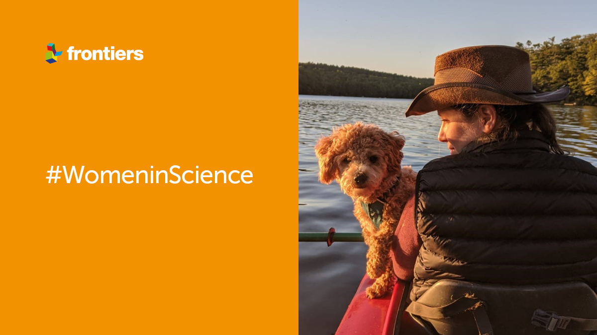
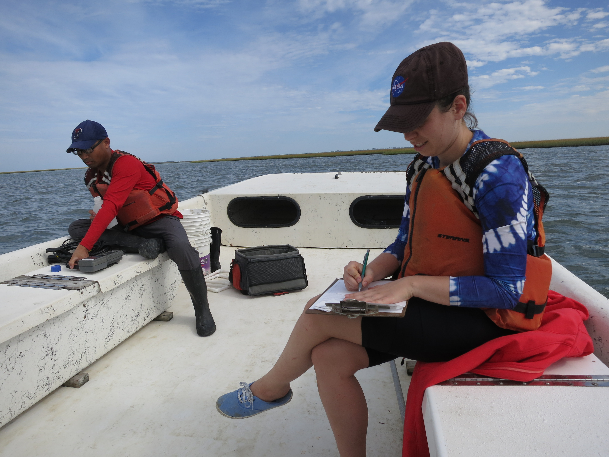
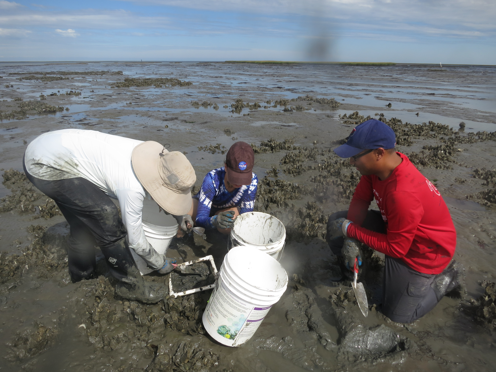
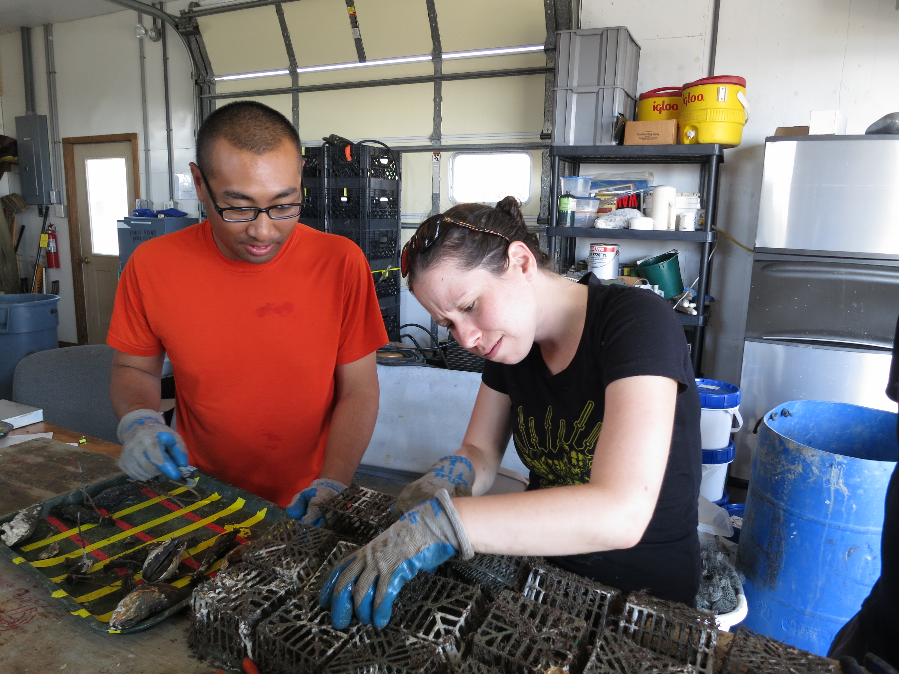

Infection, Inspiration, and Insight: Lessons Learned by a Disease Ecologist #WomeninScience
This month, Thimedi Hetti, journal specialist for Frontiers in Marine Science, talks to Dr.Sarah Gignoux-Wolfsohn, an ecologist at the Smithsonian Environmental Research Center who works in both the Marine Invasions Lab and the Marine Disease Ecology Lab.In 2020, Dr. Gignoux-Wolfsohn received the first Women in Ocean Science Award from the Central Caribbean Marine Institute to study coral disease.They discuss where her passion to study marine science stemmed from, overcoming sexism in her field, and the importance of establishing a strong network.
aperture':'0','credit':'','camera':'','caption':'','created_timestamp':'0','copyright':'','focal_length':'0','iso':'0','shutter_speed':'0','title':'','orientation':'0'}' data-image-title='womaninscience_3-1' data-large-file='https://frontiersinblog.files.wordpress.com/2021/04/womaninscience_3-1.png?w=940' data-medium-file='https://frontiersinblog.files.wordpress.com/2021/04/womaninscience_3-1.png?w=300' data-orig-file='https://frontiersinblog.files.wordpress.com/2021/04/womaninscience_3-1.png' data-orig-size='1200,675' data-permalink='https://blog.frontiersin.org/womaninscience_3-1/' sizes='(max-width: 1024px) 100vw, 1024px' src='https://frontiersinblog.files.wordpress.com/2021/04/womaninscience_3-1.png' srcset='https://frontiersinblog.files.wordpress.com/2021/04/womaninscience_3-1.png?w=1024 1024w, https://frontiersinblog.files.wordpress.com/2021/04/womaninscience_3-1.png?w=150 150w, https://frontiersinblog.files.wordpress.com/2021/04/womaninscience_3-1.png?w=300 300w, https://frontiersinblog.files.wordpress.com/2021/04/womaninscience_3-1.png?w=768 768w, https://frontiersinblog.files.wordpress.com/2021/04/womaninscience_3-1.png 1200w'>
Posted On: 2021-04-09T00:00:00




Content Date: 2021-04-09
Download Date: 2021-07-10
Document ID: L0C04F1KW